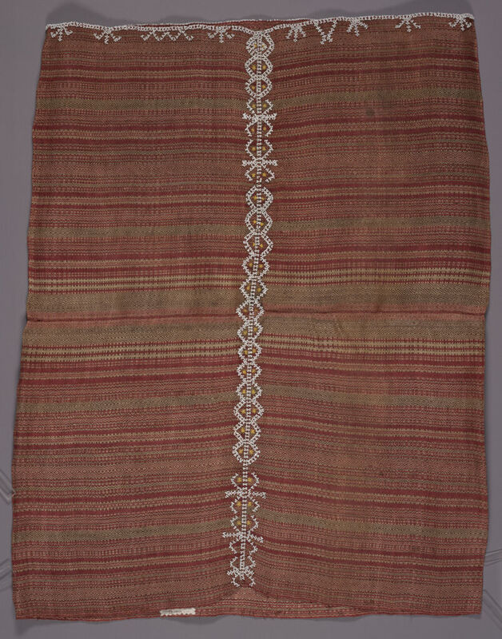
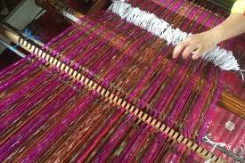
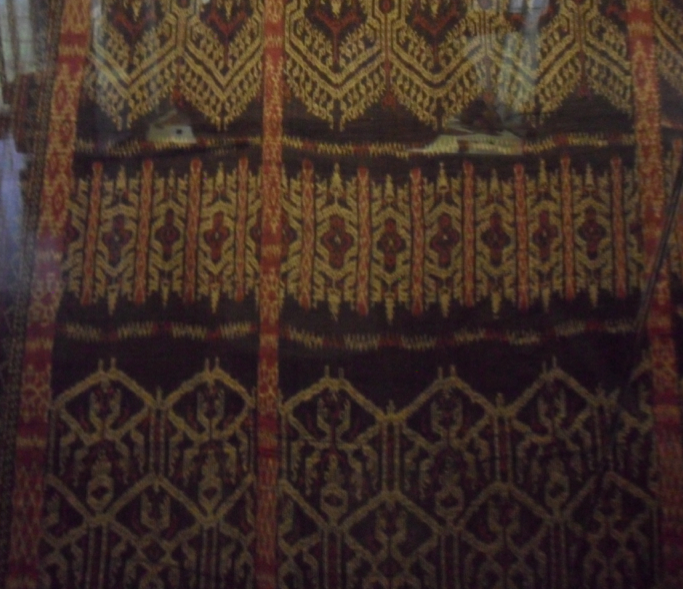
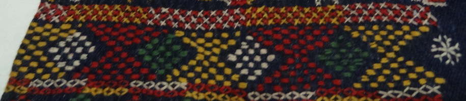
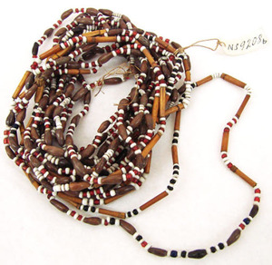
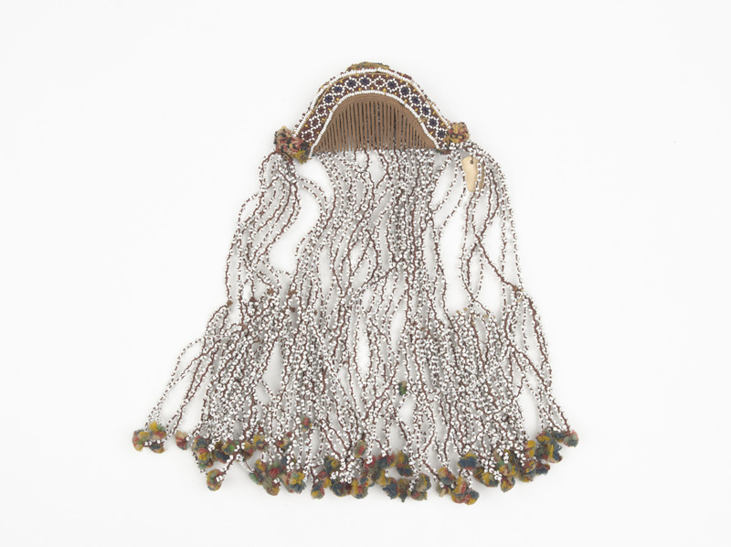
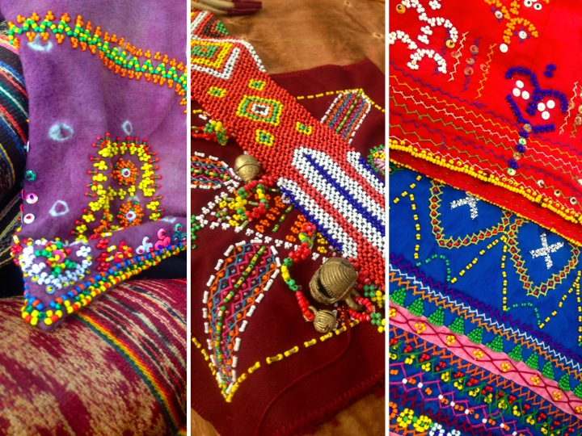
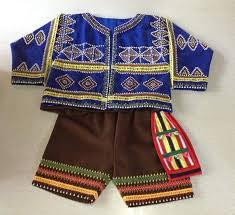
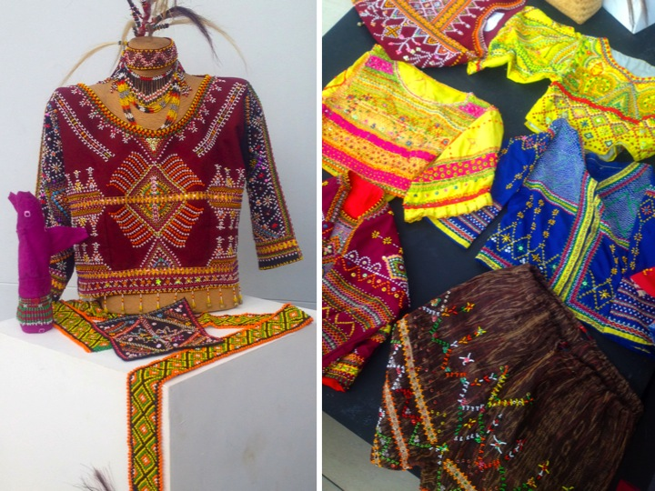

Journey into the heart of Mindanao to discover the rich cultural tapestry of the Bagobo people. Explore their traditions, artistry, and spiritual connections that have endured through centuries.
Scattered throughout the Southern Philippine Archipelago slowly disappearing tribes untouched by neither time nor colonization still exist in present time. Along the desolate eastern coast of the Davao Gulf, centuries ago, new migrants mixed with the native population, forming a new community that was given the name Bagobo. This tribe traces its origin from the people who brought Hinduism to Mindanao, its name was derived from the words bago meaning new and obo meaning growth. Throughout centuries a strong social structure has enabled these native groups to blend well with the original population, retaining their indigenous customs, beliefs and values. The Bagobo are by origin a nomadic tribe, they travelled from one place to the other by hacking their way through the virgin forests.
The Bagobo Klata are an indigenous people traditionally inhabiting an area bounded by the Davao River to the north, the Lipadas River to the south, Davao City to the east, and the border with North Cotabato to the west. Their name, "Klata," is derived from the word "klat-tang," which refers to the long bamboo or wooden staircase used to access their distinctive single-post houses. These dwellings, supported by one sturdy post, could reach heights comparable to full-grown trees. Historically known as forest dwellers, the Klata people traditionally lived within the forest. They are also recognized as warriors, a title earned from their historical role in protecting their community from Spanish colonization.
The Bagobo Tagabawa are one of the indigenous peoples of the Philippines, residing primarily on the western and southern slopes of Mount Apo, the country's highest mountain, in Davao del Sur. Their name roughly translates to "People of the South," distinguishing them from other Bagobo groups. The Bagobo-Tagabawa people, primarily agricultural, cultivate rice and crops while occasionally raising livestock. Rooted in animism, some have also embraced Christianity. Their stilt bamboo houses with thatched roofs, situated in Tibolo, showcase their unique lifestyle. Adorned in vibrant garments reflecting their artistic skill, the Bagobo-Tagabawa are skilled in beadwork and weaving.
The Obu Manuvu are an indigenous people traditionally inhabiting areas across Southern Bukidnon, Northeastern Cotabato, and Northeastern Davao. The term "Manuvu" translates to "person" or "people," and "Obu" refers specifically to their language and distinct ethnic group. This identity originated from the historical intermarriage and cultural fusion between the Bagobo Klata and Bagobo Tagabawa groups on the slopes of Mount Apo. Historically known as skilled swidden farmers and forest dwellers, the Obu Manuvu are also recognized for their intricate basketry, brasswork, and beadwork. Their society is traditionally organized under a datu system and guided by a rich oral tradition and animistic beliefs.
Location
The Bagobo traditionally inhabit the areas around Mount Apo, the highest mountain in the Philippines, located in the Davao Region of Mindanao. Their settlements are concentrated in:
Davao del Sur (especially municipalities like Bansalan, Digos, and Santa Cruz).
Districts within Davao City (e.g., Calinan, Tugbok).
Surrounding areas of Davao Occidental, North Cotabato, and Davao del Norte.
Their communities are typically located near rivers and forested areas, which are central to their subsistence and spiritual practices.
Culture & Tradition
Bagobo culture is a vibrant tapestry woven from a sacred connection to Mount Apo, a complex spirit world, and an extraordinary artistic legacy expressed through textile, bead, and metal.
Social and Political Structure
Datu System: Society is traditionally organized under a datu (chief), who is a leader in judicial, political, and social matters. The position is often, but not always, hereditary.
Council of Elders: The datu consults with a council of elders for major community decisions.
Specialized Roles: Spiritual matters are led by the mabalian (a female ritualist/healer) or baylan (shaman). Master artisans, especially weavers and metalworkers, also hold respected positions.
Material Culture and Craftsmanship
Weaving and Textiles: The Bagobos are one of the few indigenous peoples in the country who use the abaca plant as a material for their traditional clothing. They are also known to pay a lot of attention to their clothing and personal adornment.
Agriculture: The Bagobo practice swidden (slash-and-burn) agriculture, cultivating rice, corn, root crops, and vegetables.
Hunting and Gathering: They supplement their diet with hunting, fishing, and gathering forest products.
Oral Tradition
The Bagobo tribe has a rich tradition of epics, chants, myths, and folktales (passed down by the tuwaang, or bard) that preserves their history, laws, and cosmology. The Tuwaang Epic is one of the most famous.
Music and dance are not mere entertainment for the Bagobo; they are vital sacred, social, and communicative acts woven into rituals, storytelling, and community bonding. They serve as a bridge to the spirit world and a vessel for cultural memory.
MUSIC: Soundscapes of Ritual and Community
Bagobo music is primarily percussion-driven, creating complex, hypnotic rhythms that accompany dance and ritual.
1. Primary Musical Instruments:
Agung Ensemble (Kulintang)
The most important ensemble. It consists of:
Agung/Gandingan: Large, deep-rimmed gongs that provide the foundational, resonant melody and rhythm. Played with a padded mallet.
Babendil/Kulintang: A set of 8 small, knobbed gongs laid horizontally in a wooden frame. Played with two light sticks, it produces intricate, melodic patterns.
Drums (Debakan/Gandang)
Double-headed drums made from hollowed wood and animal skin. They provide the driving, rhythmic pulse and tempo changes, often signaling transitions in a dance.
Bamboo Instruments
Serongagandi: A bamboo violin or zither with strings cut from the bamboo itself.
Flutes (Suling/Taralidi): Bamboo flutes used for lyrical, melodic lines, often in courting or storytelling contexts.
Jew's Harp (Kubing/Suling): A small, plucked bamboo instrument held against the lips. It creates private, intimate sounds often used for personal expression or courting.
2. Vocal Music:
Chants (Tud-om/Ugom):
Ritualistic, often epic-length chants performed by the baylan (shaman) or mabalian (priestess). These are not sung with melody but in a dramatic, rhythmic, heightened speech pattern. They invoke spirits, narrate mythological stories (like the Tuwaang epic), and are central to healing and agricultural rites.
Lullabies (Uyayi) and Courting Songs: Everyday songs passed down through generations.
DANCE: Movement as Prayer, Story, and Social Order
Dance (sayaw/saill) visually expresses their cosmology, history, and social hierarchy.
1. Ritual and Ceremonial Dances:
Pangayaw (Headhunting/ War Dance): A fierce, masculine dance performed with a shield (kalasag) and sword (kampilan or kris). It commemorates past warrior valor, with aggressive stomping, leaping, and simulated combat movements. It is now performed as a symbolic re-enactment of their warrior heritage.
Healing and Propitiatory Dances: Performed by the baylan or community during illness or misfortune. Dancers move in trance-like states, their movements aiming to appease angry spirits or call upon benevolent ones for intervention.
Life Cycle Dances: Performed during weddings, births, and funerals to mark and sanctify the transition. Wedding dances, for instance, are elegant and celebratory, showcasing the couple's new status.
2. Mimetic and Narrative Dances:
Animal Mimicry Dances: Dances imitating the movements of birds (manok/manuk), monkeys, and eagles. These often tell folk tales or symbolize specific traits like grace, agility, or freedom.
Epic Dances: Dances that physically enact scenes from their oral epics, bringing legendary heroes and ancestral stories to life.
3. Social and Festival Dances:
Community Circle Dances: Often performed during festivals (kahimunan) or after a successful harvest. Dancers move in a circle with synchronized, rhythmic steps, symbolizing unity and celebration.
Courtship Dances: Feature playful, flirtatious movements between men and women, often using scarves or other props.
The Integration: Costume, Context, and Meaning
Costume as Amplifier:
Dances are performed in full traditional regalia—vibrant inabal weave, elaborate beadwork, brass belts, and feathered headdresses. The swaying of bead tassels, the clinking of brass bells, and the rustle of abaca fabric become part of the music and visual spectacle, emphasizing the dancer's status and the ritual's importance.
Sacred Context:
Most significant music and dance occur within rituals led by the baylan. The rhythm of the agung is believed to call the spirits, and the dancer's movements become a medium for spiritual communication.
Preservation and Performance:
Today, these traditions are kept alive by cultural masters and are proudly performed at community gatherings, schools, and cultural festivals like the Kagmayen Festival in Davao del Sur, serving as a powerful tool for cultural education and identity pride among younger generations.
• Bagobo Rice Cycle Dance
• Tud-om Bagobo Chant
• Lalabutan (Barter) Dance
• Lawin-Lawin Dance
♪ ♫ ♪
Clothing
The Bagobo are renowned for their intricate woven textiles made from abaca fibers. Their traditional clothing includes:
Inabal: Traditional woven cloth with geometric patterns


Malong: Tube skirt worn by both men and women


Accessories: Beadwork, brass belts, and jewelry made from shells and seeds


Colors: Natural dyes from plants produce red, black, and indigo colors



Clothing indicates social status, with more elaborate designs worn by datus (chiefs) and wealthy members of the community.
◈ ◇ ◈
Beliefs
The Bagobo traditionally believe in a pantheon of deities and spirits. Their chief god is Eugpamolak Manobo (also called Manama), the creator god. Other important deities include:
Mandangan: The war god
Bai: The goddess of fertility and agriculture
Nature spirits: Believed to inhabit mountains, rivers, and forests
They practice animism and believe that spirits must be appeased through rituals and offerings. A "Baylan" (shaman) serves as a spiritual intermediary between the people and the spirit world.
☾ ☼ ☽
Gallery
Explore visual representations of Bagobo life, traditions, and environment through this collection of images.
Developers
This website was created as a student project to educate people about the rich cultural heritage of the Bagobo people. Our goal is to preserve and share the unique traditions, beliefs, and artistry of this indigenous community.
Bernabie Fell A. Adobas
Jonalyn S. Gujol
Andrea M. Jandog
Ianne Carla R. Tecson
Sources: Information was gathered from various ethnographic sources including the ThingsAsian article "Last Tribes of Mindanao: The Bagobo" and other academic references on Philippine indigenous cultures.


.jpeg)